A single policy decides steering, propulsion, and their timing together — given a target location and the time remaining, not a velocity.
1 Urban Robotics Lab, KAIST
Under review · venue & year to be announced
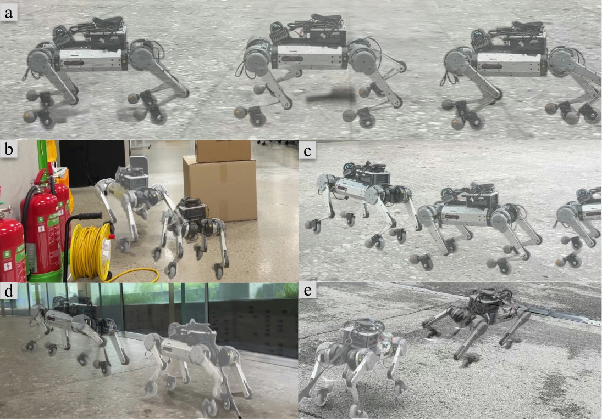
So we stopped giving the policy one
Quadrupedal robots traverse rough and discontinuous terrain, yet each impact with the ground dissipates energy and limits how far they can travel. A passive-wheel quadruped can build momentum with leg pushes and glide on the wheels in between, covering distance without further pushing.
Existing locomotion controllers take a commanded velocity as input, and navigation is left to an external planner. How long to push and how long to glide depends on where the robot must arrive and by when. A controller given only a velocity cannot make that decision.
In this paper, we present SkateNav, a single policy that decides steering, propulsion, and their timing together. It is given a target location and the time remaining rather than a velocity, and it sets the pace of its own push–glide cycle as conditions change. In simulation, SkateNav reaches its goals more reliably and at a lower energy cost than a planner paired with a velocity-tracking controller. The same policy runs on the physical robot without further tuning, over indoor and outdoor terrain. Videos of the experiments are on this page.
Passive-wheel navigation needs to be addressed as a problem of its own
We formulate local navigation for passive-wheel quadrupeds as a problem of its own and propose a single policy that decides steering and propulsion together under a time-budgeted goal-reaching objective.
The policy pushes more often when speed is needed and glides longer when momentum suffices — modulating the cycle frequency at every control step while the inter-leg offset and phase fractions stay fixed.
Across five evaluation conditions, the approach reaches its goals more reliably and at lower energy cost than planner–controller hierarchies, and the same policy transfers to the physical robot without further tuning.
Task formulation · skating cycle · frequency action · architecture
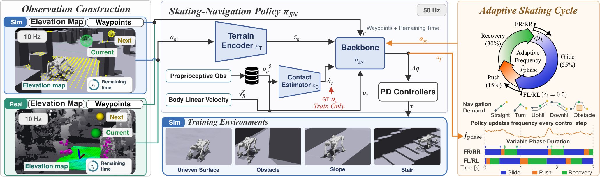
Wheeled-legged platforms divide by whether the wheels are actuated. Active wheels generate propulsion directly from wheel torque, so the robot can accelerate or hold speed at any moment, and the conventional hierarchy of a planner above a velocity controller applies directly. Passive wheels have no such authority: no propulsive force is available until the next push, and the wheels roll only along their heading. The system is underactuated and nonholonomic.
Its motion therefore inherently involves repeated acceleration and deceleration, and a velocity-tracking objective counts exactly that variation as tracking error and suppresses it. A goal-reaching objective instead specifies where the robot should reach within a given time budget, leaving its instantaneous velocity unconstrained. A hierarchy divided at the velocity command separates decisions that have to be made together.
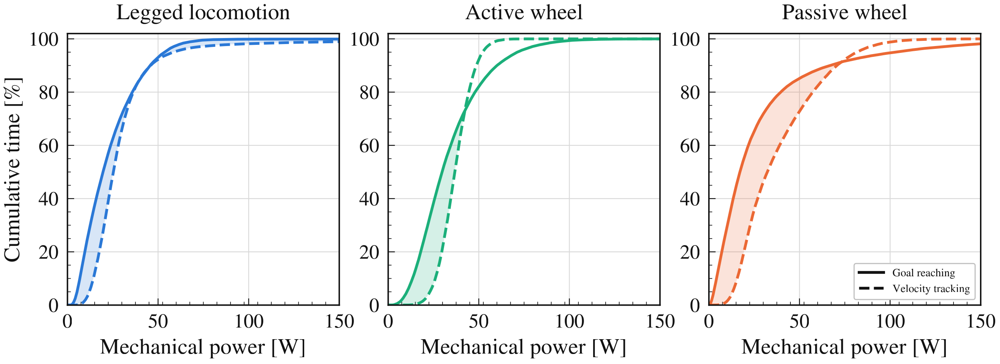
The task is navigating a passive-wheel quadruped through a sequence of waypoints, each to be reached within a prescribed time budget, supplied by a global planner (A*) that captures the coarse structure of the environment while local obstacles remain unknown a priori. The navigation command is ct = [GBcur, GBnxt, τt] — the current and subsequent waypoints in the body frame, together with the normalized remaining time τt ∈ [0, 1] for the current waypoint. The subsequent waypoint provides route look-ahead and coincides with the current one at the final goal. Local obstacles remain unknown a priori, so the policy must adapt its skating behavior and reactively avoid obstacles under nonholonomic rolling constraints.
Human skating alternates the roles of the left and right legs: while one pushes against the ground for propulsion, the other maintains rolling contact and glides. To realize this on a quadruped, the front and rear legs on each side are synchronized and a half-cycle phase offset is imposed between the left and right pairs (δ = [0, 0.5, 0, 0.5]). Each leg then follows three sequential stages — Glide (ρG = 0.55), Push (ρP = 0.15), and Recovery (ρR = 0.30). During Glide only the passive wheel remains in contact to exploit momentum, Push uses foot-ground contact for propulsion, and Recovery lifts the leg for the subsequent stroke.
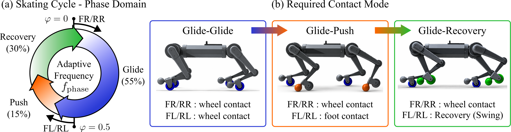
With a fixed skating frequency, the predefined phase fractions impose a fixed temporal allocation among Glide, Push, and Recovery regardless of context. Such fixed timing cannot accommodate varying navigation demands — more frequent Push stages to establish foot-ground contact for rapid steering around obstacles, or prolonged Glide stages when sufficient momentum is available. SkateNav therefore lets the policy output a frequency action af,t at every control step, mapped to the skating frequency as fphase,t = clip(fnom + sf af,t, 0.0, 3.0) with fnom = 1.5 Hz and sf = 0.25. This preserves the stage sequence and the inter-leg offsets while allowing the duration of each stage to adapt online.
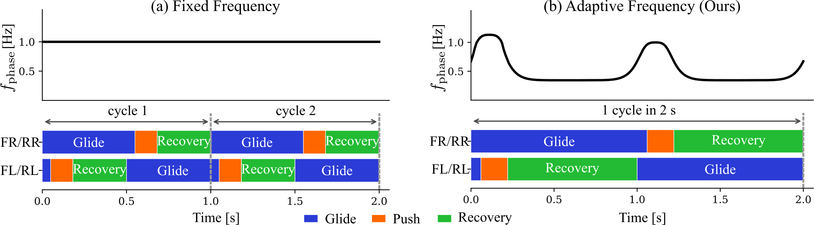
The policy uses a concurrent learning framework with an asymmetric actor–critic architecture for robust sim-to-real transfer, and comprises a terrain encoder, a contact estimator, and a backbone. Its observation is a 5-tuple: a 21 × 21 local elevation map at 0.1 m resolution encoded to a 32-dimensional latent; the robot state — a five-step proprioceptive history of joint states, foot and wheel positions, body orientation and angular velocity and the previous action, together with the body linear velocity; a skating-cycle observation encoding each leg's phase as sin/cos pairs; a contact state estimated from that proprioceptive history; and the navigation command. The backbone outputs a = [Δq, af] ∈ ℝ13, tracked by PD controllers. The asymmetric critic additionally receives the privileged randomized parameters.
1000 navigation tasks per condition · start–goal pairs 8–28 m apart · 14 s time budget
We compare SkateNav against planner–controller hierarchies that pair a local planner with a velocity-tracking (VT) policy. The VT policy differs from SkateNav only in the task formulation, and all planners share the same rollout model and cost function — goal distance, collision, and command smoothness. DWA+VT samples dynamically admissible velocity commands and selects the lowest-cost one. MPPI+VT samples 512 sequences over a 2 s horizon and applies their softmax-weighted average with an adaptive temperature. CEM+VT uses the same horizon and sample budget but iteratively refits a Gaussian proposal to elite samples and applies the converged mean.
| Method | Flat | BARN-easy | BARN-hard | Uphill | Downhill | Average | IT [ms] |
||||||
|---|---|---|---|---|---|---|---|---|---|---|---|---|---|
| SR ↑ | CoT ↓ | SR ↑ | CoT ↓ | SR ↑ | CoT ↓ | SR ↑ | CoT ↓ | SR ↑ | CoT ↓ | SR ↑ | CoT ↓ | ||
| Ours | 100.0 | 0.512 | 89.3 | 0.539 | 79.0 | 0.554 | 100.0 | 0.976 | 98.4 | 0.216 | 93.3 | 0.559 | 0.28 |
| ↳ w/o Adaptive Freq. | 100.0 | 0.628 | 88.0 | 0.695 | 78.0 | 0.653 | 100.0 | 1.402 | 70.0 | 0.348 | 84.0 | 0.581 | — |
| ↳ w/o Skating Cycle | 83.3 | 1.019 | 75.5 | 1.058 | 72.8 | 1.067 | 0.0 | — | 2.4 | 0.431 | 58.5 | 0.894* | — |
| DWA+VT | 100.0 | 0.608 | 73.1 | 0.657 | 55.5 | 0.683 | 99.8 | 1.046 | 97.7 | 0.341 | 85.2 | 0.667 | — |
| MPPI+VT | 93.4 | 0.606 | 77.4 | 0.650 | 70.9 | 0.664 | 86.9 | 1.093 | 94.1 | 0.282 | 84.5 | 0.659 | 1.31 |
| CEM+VT | 98.5 | 0.573 | 78.8 | 0.622 | 70.4 | 0.635 | 69.6 | 1.007 | 98.1 | 0.294 | 83.1 | 0.626 | 2.48 |
Best Second-best Marked within each group — SkateNav with its two ablations above, the planner–VT hierarchies below. *Uphill is excluded from the average CoT, since w/o Skating Cycle completes no trial there.
On Flat, all methods achieve a high success rate; the differences become pronounced as navigation demands increase. DWA+VT degrades in BARN-easy and -hard, where reactive steering corrections for obstacle avoidance are difficult to realize under intermittent foot-ground propulsion and retained rolling momentum. MPPI+VT and CEM+VT mitigate this by optimizing command sequences over a planning horizon, but their navigation decisions remain separated from the phase-dependent skating coordination, which shows up as a lower success rate.
SkateNav instead adapts steering, propulsion, and gliding jointly, and the learned skating frequency varies systematically with what the route asks for. As the waypoint distance grows under the same time budget, the policy raises the frequency, producing more frequent Push phases for propulsion. The tendency is strongest on Uphill, where repeated foot-ground contact provides the traction needed for traversal, whereas Downhill favors lower frequencies to exploit the momentum gained during descent. The frequency also rises as obstacle clearance decreases in the BARN settings, enabling rapid steering corrections.
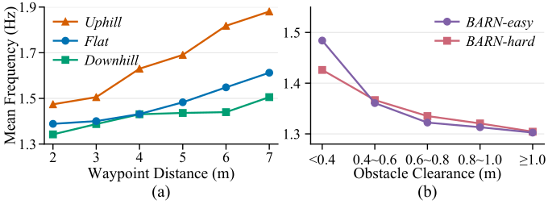
Beyond adapting to demand, SkateNav exploits this gait-level flexibility more effectively than the VT policy. Grouping all phase pairs between the right and left legs into Glide–Glide (G-G), Glide–Push (G-P) and Glide–Recovery (G-R) — regardless of phase order — VT slows the phase progression during G-P while rapidly progressing through G-R to maintain the commanded velocity, giving it longer G-P and shorter G-R durations than ours.
For the same total traversal distance, this difference makes SkateNav cover comparable distances during G-P and G-R while consuming substantially less energy in G-R, whereas VT relies more heavily on the energy-intensive G-P interval for travel. This temporal redistribution toward momentum-driven motion is what supports the consistently lower CoT across the benchmarks.
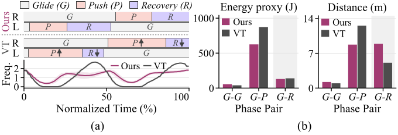
To examine whether an adaptive frequency is necessary at all, we compare against w/o Adaptive Freq., which advances the skating cycle at a fixed rate. The frequency that performs well depends on the navigation demand: Uphill requires sufficiently high frequencies for reliable navigation, whereas raising the frequency on Flat and BARN-hard raises CoT. Even within one environment, different settings lead to noticeable differences in both navigation performance and energy efficiency. No single fixed frequency achieves both a high success rate and a low CoT across demands. SkateNav instead learns to adjust the frequency as part of its navigation decision, preserving navigation performance while improving energy efficiency.
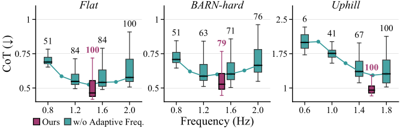
Without the skating cycle, the goal-reaching objective alone struggles to discover an energy-efficient skating pattern — one that involves intermittent foot-ground contact for propulsion with the resulting momentum exploited through wheel-ground contact for gliding. w/o Skating Cycle yields a lower success rate and substantially higher CoT across all environments, and fails on Uphill completely. The skating cycle therefore provides a useful inductive bias for organizing skating behavior, while the adaptive frequency provides the flexibility to exploit that structure across varying navigation conditions.
1000 navigation tasks per condition, from a shared start–goal table
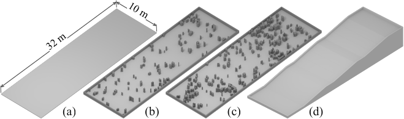
For each condition we generate 1000 navigation tasks by sampling start–goal pairs 8–28 m apart, each with a 14 s time budget.
Success rate (SR) is the proportion of trials in which the robot arrives within 0.2 m of the target. Cost of transport (CoT) normalizes the accumulated actuator energy by the robot weight and the traveled distance, computed with a simplified DC motor model in which the electrical power of each actuator is approximated as the sum of mechanical power and Joule loss; regenerative energy recovery is not modeled. The motor constants are those of the actuator used in our system, R = 0.73 Ω and Kt = 1.22 N·m/A. Inference time (IT) is the time required for each decision step on an RTX 4090 in a single-robot setting.
Four indoor and outdoor sites unseen during training
We deployed the policy trained in simulation on the physical platform without further tuning. State estimation and the local elevation map are produced onboard at 10 Hz, and the policy runs at 50 Hz. Among the indoor deployments, the traverse below covers the widest range of conditions: an extended route with curves, a downhill, and cluttered rooms. The velocity along the trajectory is not uniform — the robot slowed through the curves and the cluttered sections, and reached its highest velocity on the descent. This matched the behavior the adaptive skating cycle produces in simulation.
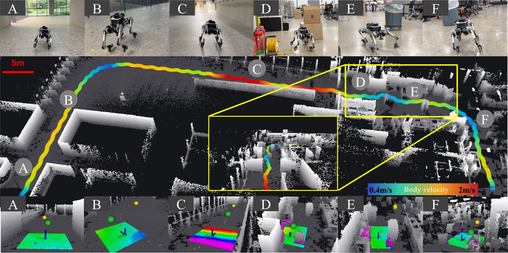
Raw onboard-policy deployments, re-encoded for the web. Click to play with sound.
The foot itself serves as the non-rolling contact
Human inline skaters exploit the anisotropic rolling constraint of the skate, orienting it relative to the heading direction and pushing laterally to convert the ground reaction force into forward propulsion. Reproducing this on a quadruped requires independent control of the end-effector orientation, but the three actuated degrees of freedom per leg only control its position. Prior work therefore introduced a separate non-rolling contact feature alongside the passive wheel. Instead of adding such an element, we use the existing foot as the non-rolling contact and attach a detachable passive-wheel module: foot-ground contact generates propulsion, whereas wheel-ground contact provides low-resistance rolling.
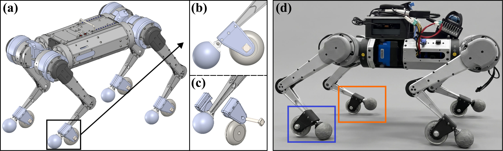
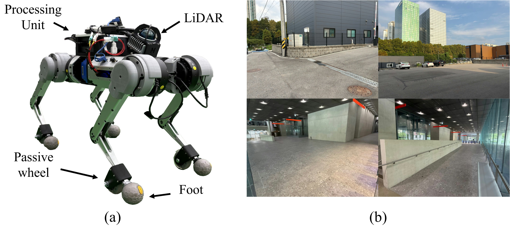
Author list and venue will be filled in on publication
@inproceedings{skatenav,
title = {{SkateNav}: Learning Unified Adaptive Skating and Local Navigation
for Passive-Wheel Quadrupedal Robots},
author = {Author, One and Author, Two and Author, Three and Myung, Hyun},
booktitle = {TBD},
year = {TBD}
}